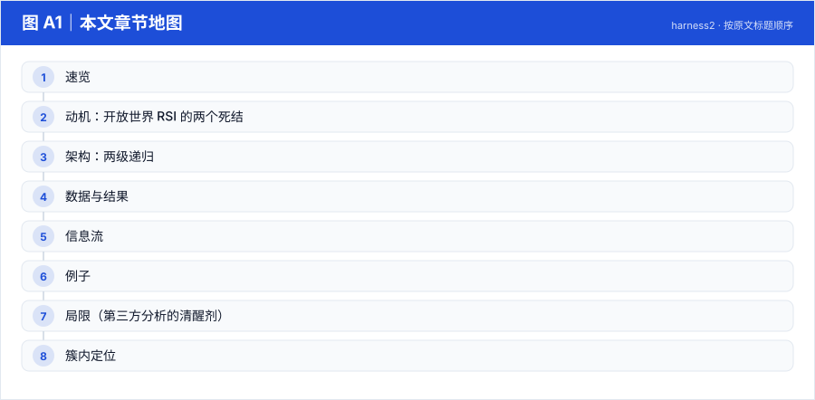
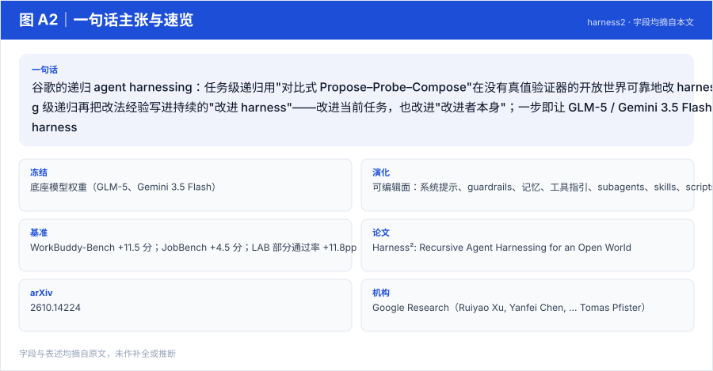
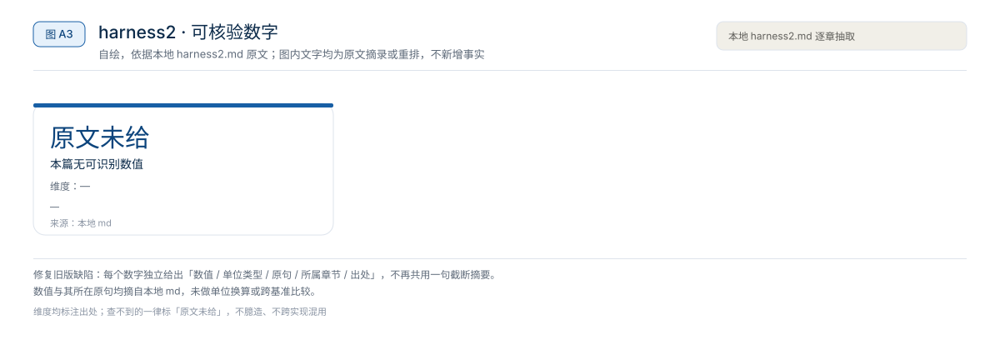
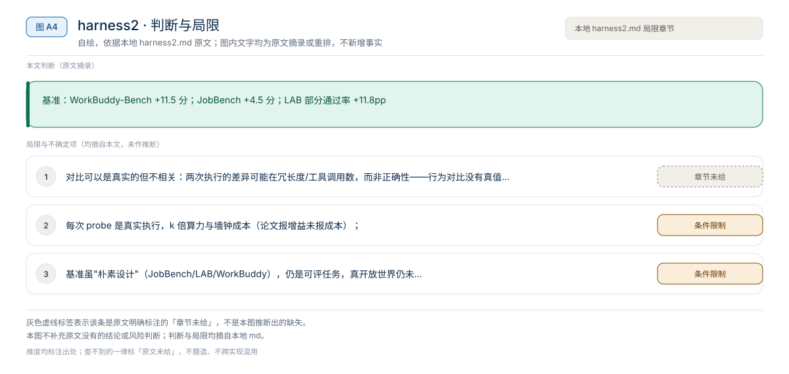

【Harness VLA · 代码即策略与技能发现】RAX 深读：把在线探索做成 Scaling Law，五大基准平均领先 37.4 个点
冻结通用 coding agent 直接连机器人感知/控制接口，把"在线探索"做成 scaling law：成功决策编译成程序、版本化入库，能力随探索预算单调增长
Harness01-代码即策略与技能发现2026
谷歌的递归 agent harnessing：任务级递归用"对比式 Propose–Probe–Compose"在没有真值验证器的开放世界可靠地改 harness；harnessing 级递归再把改法经验写进持续的"改进 harness"——改进当前任务，也改进"改进者本身"；一步即让 GLM-5 / Gemini 3.5 Flash 全面超越基座 harness
原题与资源：Harness²: Recursive Agent Harnessing for an Open World · arXiv:2610.14224
一句话：谷歌的递归 agent harnessing：任务级递归用"对比式 Propose–Probe–Compose"在没有真值验证器的开放世界可靠地改 harness；harnessing 级递归再把改法经验写进持续的"改进 harness"——改进当前任务，也改进"改进者本身"；一步即让 GLM-5 / Gemini 3.5 Flash 全面超越基座 harness
阅读成本：正文约 2588 字 / 8 个章节 / 4 张图；目录按本文原有章节顺序排列，章节内容未改动。
目录（点击跳到对应章节）：

图 A1：本文章节地图（节点即原文 h2 标题）。自绘，依据本文，不新增事实。
| 项 | 内容 |
|---|---|
| 一句话 | 谷歌的递归 agent harnessing：任务级递归用"对比式 Propose–Probe–Compose"在没有真值验证器的开放世界可靠地改 harness；harnessing 级递归再把改法经验写进持续的"改进 harness"——改进当前任务，也改进"改进者本身"；一步即让 GLM-5 / Gemini 3.5 Flash 全面超越基座 harness |
| 冻结 | 底座模型权重（GLM-5、Gemini 3.5 Flash） |
| 演化 | 可编辑面：系统提示、guardrails、记忆、工具指引、subagents、skills、scripts、plugins |
| 基准 | WorkBuddy-Bench +11.5 分；JobBench +4.5 分；LAB 部分通过率 +11.8pp |

图 A2：一句话主张与速览字段。自绘，依据本文，不新增事实。

图 A3：本文可核验的数字摘录。自绘，依据本文，不新增事实。
一个具体任务走一遍 · 本文可核验数字与字段速查（以下均摘自原文，未作推算）：
❶ 任务级递归（改当前任务的 harness）
❷ harnessing 级递归（改进"改进者"）
| 基准 | 一步增益 | 并行递归再加 |
|---|---|---|
| WorkBuddy-Bench（办公/网页/代码） | 最高 +11.5 | +3.9 |
| JobBench（专业工作） | +4.5 | +4.2 |
| LAB（法律，Harvey）部分通过率 | +11.8pp | +6.7pp |
任务 → 当前 harness 执行 → 证据
→ Propose（提编辑）→ Probe（同条件对比执行）→ Compose（行为对比支持的组合）
→ [并行/顺序递归扩展]
→ 采纳的 harness + 经验教训 → Improvement Harness（持久）
→ 下个任务的 Propose 阶段被它引导底座 Gemini 3.5 Flash（Avg Score / Steps）
| 方法 | Avg |
|---|---|
| OpenCode | 73.4 |
| ReasoningBank | 73.4 |
| Meta-Harness† | 76.4 |
| Harness Scaling | 75.3 |
| Harness² | 77.5（+Recursion 再 +4.3） |
底座 Codex： Codex 74.5 → Harness² 77.5（+Recursion +1.6）；GLM-5 底座同趋势（OpenCode 58.4 → Harness² 显著提升）。
| 配置 | Code | Web | Office | Avg |
|---|---|---|---|---|
| Base harness | 73.4 | 69.9 | 74.0 | 72.4 |
| w/o prompt | 78.8 | 76.0 | 83.1 | 79.3 |
| w/o skills | 77.2 | 71.4 | 77.9 | 75.5 |
| w/o scripts | 79.3 | 76.0 | 76.0 | 77.1 |
| Harness² (full) | 80.8 | 78.3 | 83.4 | 80.8 |
skills 是最大单一贡献（去掉掉 5.3 分），scripts 次之（3.7），prompt 最小（1.5）。
法律备忘录任务没有参考答案可比——Harness² 让 agent 用两个 harness 版本各写一版，对比"引用核查步骤是否出现在工作流里、事实遗漏在哪"这类行为差异，组合出带"先核查后撰写"中间步骤的新 harness；这条经验（"专业写作先核查"）随后进入 Improvement Harness，被下一个合同审查任务复用。
本文判断：基准：WorkBuddy-Bench +11.5 分；JobBench +4.5 分；LAB 部分通过率 +11.8pp
局限与不确定项（以下均摘自本文，未作推断）：

图 A4：局限与不确定项摘录。自绘，依据本文，不新增事实。
覆盖范围：本页新增的导读、目录、章节地图、数字卡与局限清单，均为原文信息的重排或摘录；正文、数据与实验结论未改动。